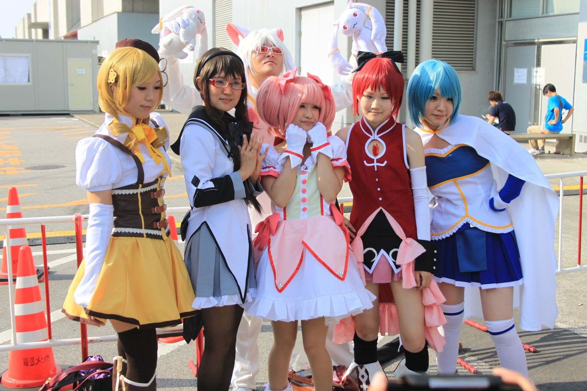

Ōsu Kannon TempleCosplay Parade !
C'est la dernière parade du WCS, et elle circule entre le temple et la Ôsu Shopping Street. Je suis arrivée à 9h pour me placer tranquillement, et la parade commençait à 10h (ponctualité japonaise, bonjour!) Mais déjà à cette heure-là, c'était plein à craquer! Heureusement que je suis un mini-pouce, j'ai réussi à me faxer jusqu'en première ligne et à voyager entre le temple et la rue commerçante pour avoir plusieurs photos à des endroits différents. Mais la foule nippone, surtout pour du cosplay, c'est tout un concept.
J'ai été super contente de découvrir toutes les teams (sauf les 8 pré-élues aux rounds de Tokyo) qui allaient « s'affronter » le soir-même à la finale, mais également une belle troupe d'alumnis - d'anciens participants et gagnants aux WCS dont certains que j'admire tout particulièrement! Mais également des cosplayers amateurs venus parader avec toute la clique avec des choix de costume parfois très réussis, parfois très originaux.